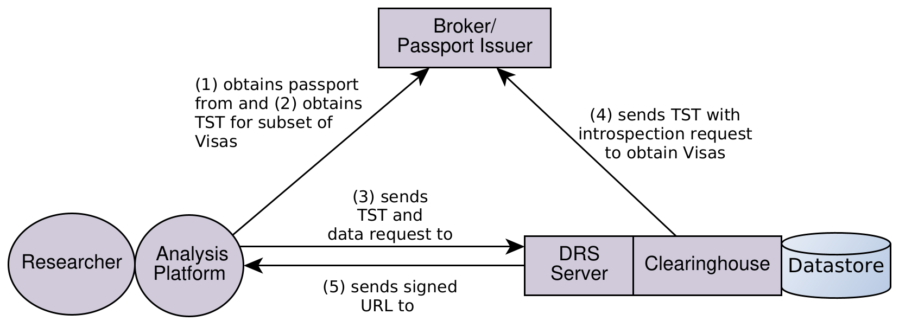
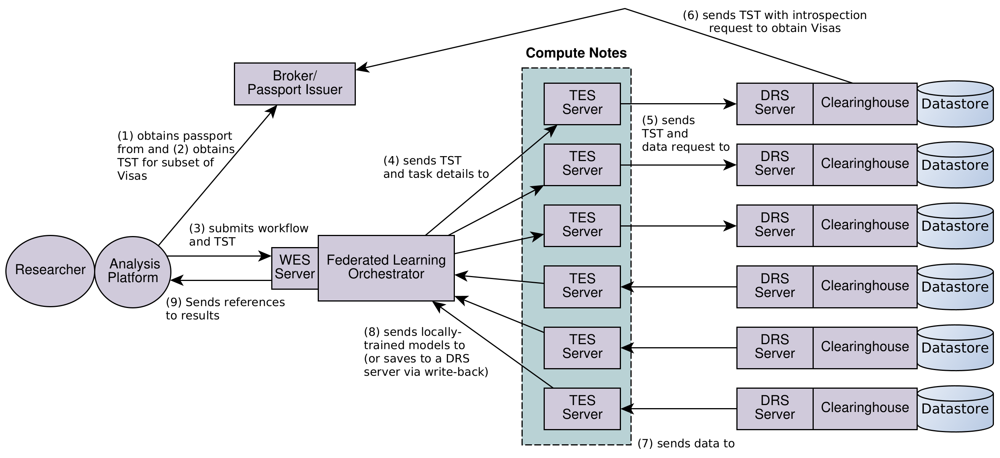

AAI OIDC Profile
Abstract
This specification defines a profile for using the OpenID Connect protocol [OIDC-Core] to provide federated multilateral authorization infrastructure for greater interoperability between biomedical institutions sharing restricted datasets. (OpenID Connect is a simple identity layer, on top of the OAuth 2.0 protocol, that supports identity verification and the ability to obtain basic profile information about end users.) In particular, this specification defines tokens, endpoints, and flows that enable an OIDC provider (called a Broker) to provide Passports and Visas to downstream consumers called Passport Clearinghouses. Passports can then be used for authorization purposes by downstream systems.
Table of Contents
- Introduction
- Notation and Conventions
- Terminology
- Relevant Specifications
- Overview of Interactions
- Flow of Assertions
- Profile Requirements
- GA4GH JWT Formats
- Security Considerations
- Specification Revision History
Introduction
This specification leverages OpenID Connect (OIDC) to authenticate researchers desiring to access clinical and genomic resources from data holders adhering to GA4GH standards. Beyond standard OIDC authentication, AAI enables data holders to obtain security-related attributes and authorizations of those researchers. The Data Use and Researcher Identity (DURI) Work Stream has developed a standard representation for researcher authorizations and attributes [Researcher-ID].
Technical Summary
At its core, the AAI specification defines cryptographically secure tokens for exchanging researcher attributes called Visas, and how various participants can interact to authenticate researchers, and obtain and validate Visas.
The main components identified in the specification are:
- Visa Issuers, that cryptographically sign researcher attributes in the form of Visas.
- Brokers, that authenticate researchers and provide Visas.
- Clients, that perform actions that may require data access on behalf of researchers, relying on tokens issued by Brokers and Visa Issuers.
- Passport Clearinghouses, that accept tokens containing or otherwise availing researcher visas for the purposes of enforcing access control.
Visa Tokens
Visas are used for securely transmitting authorizations or attributes of a researcher. Visas are tokens [JWT] signed by Visa Issuers and validated by Passport Clearinghouses.
Separation of Data Holders and Data Access Committees
It is a fairly common situation that, for a single dataset, the Data Access Committee (DAC) (the authority managing who has access to a dataset) is not the same party as the Data Holder (the organization that hosts the data, while respecting the DAC’s access policies).
For these situations, AAI is a standard mechanism for data holders to obtain and validate existing authorizations from DACs, by specifying the interactions between Visa Issuers, Brokers, and Passport Clearinghouses.
The AAI standard enables Data Holders and Visa Issuers to recognize and accept identities from multiple Brokers — allowing for a more federated approach. An organization can still use this specification with a single Broker and Visa Issuer, though they may find in that case that there are few benefits beyond standard OIDC.
Notation and Conventions
Terms defined in Terminology appear as capitalized links, e.g. Passport.
References to Relevant Specifications appear as bracket-enclosed links, e.g. [OIDC-Core].
The key words “MUST”, “MUST NOT”, “REQUIRED”, “SHALL”, “SHALL NOT”, “SHOULD”, “SHOULD NOT”, “RECOMMENDED”, “MAY”, and “OPTIONAL” in this specification are to be interpreted as described in [RFC2119].
Terminology
This specification inherits terminology from the OpenID Connect [OIDC-Core] and OAuth 2.0 Authorization Framework [RFC6749] specifications.
Broker – An OIDC Provider service that authenticates a user (potentially by relying on an Identity Provider), collects user’s Visas from internal and/or external Visa Issuers, and provides them to Passport Clearinghouses.
Claim – as defined by the JWT specification [RFC7519] – A piece of information asserted about a subject, represented as a name/value pair consisting of a claim name (a string) and a claim value (any JSON value).
Client – as discussed in the OAuth 2.0 Authorization Framework [RFC6749] specification
Data Holder – An organization that holds a specific set of data (or its copy) and respects and enforces the Data Access Committee’s (DAC’s) decisions on who can access it.
GA4GH Claim – A Claim as defined by a GA4GH
documented technical standard that is making use of this AAI specification. Typically
this is the ga4gh_passport_v1 or ga4gh_visa_v1 Claim for Passports v1.x.
A GA4GH Claim is asserted by the entity that signed the token in which it is contained (not by GA4GH).
Identity Provider (IdP) – A service that provides to users an identity, authenticates it, and provides assertions to a Broker using standard protocols, such as OpenID Connect, SAML or other federation protocols. Examples: eduGAIN, Facebook, NIH eRA Commons. IdPs MAY be Visa Assertion Sources.
JWT – JSON Web Token as defined in [RFC7519]. A JWT contains a set of Claims.
Passport Clearinghouse – A service that consumes Visas and uses them to make an authorization decision based on inspecting them and allows access to a specific set of underlying resources in the target environment or platform. This abstraction allows for a variety of models for how systems consume these Visas in order to provide access to resources. Access can be granted by either issuing new access tokens for downstream services (i.e. the Passport Clearinghouse may act like an authorization server) or by providing access to the underlying resources directly (i.e. the Passport Clearinghouse may act like a resource server). Some Passport Clearinghouses may issue Passports that contain a new set or subset of Visas for downstream consumption.
Passport-Scoped Access Token –
An OIDC access token with scope
including the identifier ga4gh_passport_v1.
The access token MUST be a JWS-encoded JWT token containing openid and ga4gh_passport_v1
entries in the value of its scope Claim.
It is RECOMMENDED that Passport-Scoped Access Tokens follow the JWT Profile for OAuth 2.0 Access Tokens specification [RFC9068].
Passport – A signed and verifiable JWT that contains Visas.
Passport Issuer – A service that creates and signs Passports.
Task-Specific Token – An opaque token that is used to represent a Client request that is associated with a subset of Visas in a user’s Passport. Obtained via Token Exchange from a Passport or other Task-Specific Token.
Token Endpoint – a Broker’s implementation of the [OIDC-Core] Token Endpoint.
Token Exchange – The protocol defined in [RFC 8693] as an extension of OAuth 2.0 for exchanging access tokens for other tokens. A token exchange is performed by calling the Token Endpoint.
UserInfo Endpoint – a Broker’s implementation of the [OIDC-Core] UserInfo Endpoint.
Visa – A Visa encodes a Visa Assertion in compact and digitally signed format that can be passed as a URL-safe string value.
A Visa MUST be signed by a Visa Issuer. A Visa MAY be passed through various Brokers as needed while retaining the signature of the original Visa Issuer.
Visa Assertion – a piece of information about a user that is asserted by a Visa Assertion Source. It is then encoded by a Visa Issuer into a Visa.
Visa Assertion Source – the source organization of a Visa Assertion, which SHOULD include the organization associated with making the assertion, although it MAY optionally identify a sub-organization or a specific assignment within the organization that made the assertion.
- This is NOT necessarily the organization that signs the Visa; it is the organization that has the authority to make the assertion on behalf of the user and is responsible for making and maintaining the assertion.
Visa Issuer – A service that signs Visas. This service:
Relevant Specifications
[IANA-JWT] – Standard JWT Claim name assignments, Internet Assigned Numbers Authority
[OIDC-Core] – OpenID Connect Core 1.0 (OIDC) – Authorization Code Flow will generate id_tokens and access_tokens from the Broker.
[OIDC-Client] – OpenID Connect Basic Client Implementer’s Guide 1.0
[OIDC-Discovery] – OpenID Connect Discovery 1.0
[Passport] – GA4GH Passport Specification, Data Use and Researcher Identity (DURI) Work Stream – Defines Passport and Visa formats.
[Researcher-ID] – GA4GH Passport Specification, Data Use and Researcher Identity (DURI) Work Stream – Defines researcher identities for GA4GH Passports and Visas.
[RFC2119] - Key words for use in RFCs to Indicate Requirement Levels
[RFC5246] - Transport Layer Security (TLS). Information passed among clients, applications, resource servers, Brokers, and Passport Clearinghouses MUST be protected using TLS.
[RFC6749] – The OAuth 2.0 Authorization Framework
[RFC6819] - Lodderstedt, T, McGloin, M., and P. Hunt, “OAuth 2.0 Threat Model and Security Considerations”, RFC 6819, January 2013.
[RFC7515] – JSON Web Signature (JWS) is the specific JWT to use for this spec.
[RFC7519] – JSON Web Token (JWT) – Specific implementations MAY extend this structure with their own service-specific JWT Claim names as top-level members of this JSON object. The JWTs specified here follow the JWS specification [RFC7515].
[RFC7636] – Proof Key for Code Exchange by OAuth Public Clients (PKCE)
[RFC7662] – J. Richer, Ed., “OAuth 2.0 Token Introspection”, October 2015
[RFC8693] - Jones, M., Nadalin, A., Campbell, B., Ed., Bradley, J., and C. Mortimore, “OAuth 2.0 Token Exchange”, RFC 8693, DOI 10.17487/RFC8693, January 2020.
[RFC8725] - Sheffer, Y., Hardt, D., and M. Jones, “JSON Web Token Best Current Practices”, BCP 225, RFC 8725, DOI 10.17487/RFC8725, February 2020.
[OAuth-Security-BCP] - Lodderstedt, T., Bradley, J., Labunets, A., Fett, D., “OAuth 2.0 Security Best Current Practice”, draft-ietf-oauth-security-topics-29, June 2024.
[RFC9068] – JWT Profile for OAuth 2.0 Access Tokens
Overview of Interactions
In the flow recommended in this document, the Client does not ever distribute an initial Passport-Scoped Access Token to other services. A token exchange operation is executed by the client, in exchange for a Passport JWT that may be either (1) forwarded downstream to access resources or (2) exchanged for an opaque Task-Specific Token. In either case, the Client may choose for a subset of Visas to be sent to downstream services–directly via forwarding of a de-scoped Passport JWT, or indirectly through a Task-Specific Token that only enables access to a subset of Visas.
- NOTE: We assume that the Broker and Passport Issuer are the same in this section (the “Broker”). In general, this may not be the case but simplifies the exposition. The Profile Requirements Section differentiates requirements for the two roles.
Direct Forwarding of Passports
In this example flow, the Client sends a passport directly to downstream services–i.e., the Passport is included as authorization in the POST to a Clearinghouse that holds data.
The Client may also exchange a Passport-Scoped Access Token for aa Passport that contains a subset of Visas. For example, it may submit the following request to the Broker and Passport Issuer’s /token endpoint:
POST https://broker.example.org/token
Content-Type: application/x-www-form-urlencoded
grant_type=urn:ietf:params:oauth:grant-type:token-exchange
&subject_token=<passport-scoped access token>
&subject_token_type=urn:ietf:params:oauth:token-type:access_token
&requested_token_type=urn:ga4gh:params:oauth:token-type:passport
&audience=https://wes.example.org
&requested_visa_jti=a1b2c3
&requested_visa_iss=https%3A%2F%2Fvisa-issuer.example.org
The Client, in turn, would receive a de-scoped Passport JWT. Note that we assume that the Client has already received the user’s full Passport via another token exchange operation (i.e., as in the above figure), allowing it to specify specific Visas via a jti/iss combination. This expands upon the AAI v1.2 specification where a Passport-Scoped Access Token is exchanged for a Passport that is de-scoped according to the resource claim in the token exchange request. This approach was problematic in that Broker was required to resolve values of resource into identifiers that can be used to filter Visas. A means that some assumptions must be made to handle filtering (e.g., resource values are to be matched to the value claim within ControlledAccessGrant Visas) and does not provide a route to filter for the other standard Visa types or custom Visa types. Exchanging a Passport for a Passport adds an additional communication exchange with the Broker, but allows the burden of Visa filtering to lie with the Client–which has direct knowledge of the specific use for the de-scoped Passport.
This flow, that of directly sending Passport JWTs to downstream services, has the advantage of allowing the Client to cache a Passport and present it to multiple downstream services without further consultation with the Broker (i.e., the Passport Clearinghouse is no longer required to be a Client of the Broker). A receiver of a Passport can then verify authenticity via associated Passport and Visa signing keys and the various expiration times.
There are several tradeoffs with this approach, however:
- Large Passports may exceed the size of headers for HTTP GET requests, requiring API modifications to support POSTing of Passports. This is especially relevant for read-only operations that would typically be GET-based.
- If a service forwards a Passport to another service, a Clearinghouse is unable to trace the provenance of a request back to the original Client.
- Revocation of Passports and Visas are more dependent on their expiration claims, due to fewer Broker interactions.
Task-Specific Tokens
To improve the auditability of authorization flows, speed revocations, and address the “large Passport” problem, AAI v2.0 introduces the concept of Task-Specific Tokens–opaque identifiers that represent a de-scoped version of a Passport. This necessarily shifts additional communication burden back to the Broker (similar to AAI v1.0, where a Passport Clearinghouse retrieved a list of Visas from the Broker) as the services that receive a token must communicate with the Broker to introspect the token to determine (1) token validity and (2) the set of Visas associated with the token.

As a motivating example, consider the situation where a Client would like to instantiate a workflow on behalf of a user:
In the above example, the Clients send a request to start a workflow to a GA4GH Workflow Execution Service (WES) endpoint. The WES server, in turn, sends two workflow tasks to different GA4GH Task Execution Service (TES) endpoints. Finally, to finish their tasks the TES servers access data through two GA4GH Data Repository Service (DRS) endpoints that have associated Passport Clearinghouses that are used to make access decisions to specific datasets based on Visas within the user’s Passport. Note there are two different types of services in this flow: orchestration intermediaries such as WES and TES that may not need to know specifics about a user’s Visas, and authorization consumers (e.g., DRS) that need Visas to make access decisions.
In the case of direct forwarding of Passports, the Client would send the (potentially de-scoped) Passport JWT to WES, which would possibly de-scope it again before forwarding to the TES services. An alternative approach would be for the Client to exchange the Passport-Scoped Access Token for a Task-Specific Token that has a limited scope:
POST https://broker.example.org/token
Content-Type: application/x-www-form-urlencoded
grant_type=urn:ietf:params:oauth:grant-type:token-exchange
&subject_token=<passport-scoped access token>
&subject_token_type=urn:ietf:params:oauth:token-type:access_token
&requested_token_type=urn:ga4gh:params:oauth:token-type:task_specific
&audience=https://wes.example.org
&allow_delegation=true
&requested_visa_jti=a1b2c3
&requested_visa_iss=https%3A%2F%2Fvisa-issuer.example.org
&requested_visa_jti=d4e5f6
&requested_visa_iss=https%3A%2F%2Fras.nih.gov
Note that this example also assumes that a Client has already received a user’s Passport to be able to identify specific Visas, similar to the situation of obtaining a de-scoped Passport in the Direct Forwarding interaction. In this situation, however, the Client receives an opaque token (i.e., of fixed size and of no inherent informational value to the Client) as a response from the Broker:
{
"access_token": "uY29ssbFm3_Kq7Pk2zH8dR4tNwXvL6aE",
"token_type": "Bearer",
"issued_token_type": "urn:ga4gh:params:oauth:token-type:task_specific",
"expires_in": 3600,
"scope": "ga4gh_passport_v1"
}
There are some interesting features in the original request:
- The Client specifies the specific audience for the token, such as the hostname of the WES server. According to RFX 8693, the resource claim may be used in a similar manner for URIs (e.g., the actual URI of the WES endpoint). As we will see, this audience information will be stored by the Broker and used to make introspection decisions.
- Note that the Broker must have some method of identifying a particular service as identified via audience or resource so as to enforce use of a Task-Specific Token only by intended services. This could be implemented via the client credentials flow (RFC 6749, Section 4.4) as shown in the example below. We regard the details of realizing client credentials within a particular ecosystem, e.g., managing service registration and key management, as implementation decisions that are outside of this specification.
- We see a new value of requested_token_type, task_specific.
- The Client is explicitly allowing the audience to exchange the token for other tokens via the allow_delegation claim, either with different audiences or for fewer Visas. We recommend that the behavior of this flag be such that it is consumed at each step–i.e,. each token exchange MUST set allow_delegation to be true for the receiving service to be able to perform a downstream token exchange.
After receiving the Task-Specific Token, the Client (or another downstream service) is also to send API requests using the Task-Specific Token as bearer token within the Authorization field of the HTTP header. The receiving service can then verify the Task-Specific Token via the Broker’s /introspect endpoint (see RFC 7662 for OAuth2.0 token introspection) or simply forward it along without introspection. The following figure illustrates a scenario where WES, TES, and DRS are used to execute a federated learning workflow by passing along a TST. As we note later, this TST may be the original one issued to the client, or a TST what was issued to a downstream service (e.g., WES or TES) that reduces the scope of the token (either Visas or audience/resources) further.

An example introspection request is as follows:
POST https://broker.example.org/introspect
Content-Type: application/x-www-form-urlencoded
token=<task-specific-token>
claims=false
client_assertion_type=urn:ietf:params:oauth:client-assertion-type:jwt-bearer
client_assertion=<signed-jwt>
where the client_assertion JWT is
{
"iss": "https://wes.example.org",
"sub": "https://wes.example.org",
"aud": "https://broker.example.org/introspect",
"iat": 1234567900,
"exp": 1234567960,
"jti": "<unique id>"
}
Assuming that the ecosystem uses client credentials, the Broker is able to retrieve the service’s public key and verify the signature on the client_assertion JWT and also determine that the holder of the Task-Specific Token aligns with the specific audience/resources requirements of the token creation request. The claims key in the introspection request indicates if the requestor is an orchestrating intermediary (if claims is false) or an authorization consumer that would require the GA4GH Visas to make authorization decisions. In the former case, the /introspect endpoint returns
{
"active": true,
"sub": "user-id",
"client_id": "https://client.example.org",
"aud": "https://wes.example.org",
"token_type": "Bearer",
"exp": 1234571490,
"iat": 1234567890,
"issued_token_type": "urn:ga4gh:params:oauth:token-type:task_specific",
"act": {
"sub": "https://client.example.org"
}
}
If Visas are required, the introspection request returns:
{
"active": true,
"sub": "user-id",
"aud": "https://drs1.example.org",
"act": {
"sub": "https://tes1.example.org",
"act": {
"sub": "https://wes.example.org",
"act": {
"sub": "https://client.example.org"
}
}
},
"ga4gh_passport_v1": [
"<visa-jwt-1>",
"<visa-jwt-2>"
]
}
Note that this response includes an act claim that implies a chain of token exchanges (see sequence diagram, below).
Each exchange is tracked by the Broker as indicated by the aud claim–showing a chain of delegation from the client to a TES server, which uses the final Task-Specific Token to access data via DRS. See RFC 8693 (OAuth 2.0 Token Exchange) for details on the use of aud. Some additional points:
- If an orchestrating intermediary is only creating a new token for downstream use (e.g., to update the audience and aud), it does not need to make an explicit introspection request prior to a token exchange. Instead, it could submit a token exchange request directly (likely relying on client credentials or an allowlist for client authentication) knowing that the exchange request will be rejected for an invalid token or service. This is shown in the above diagram. The intermediary cannot skip introspection, however, if it needs to dynamically determine the set of Visas within the request for further de-scoping, to reason about the delegation chain in aud, or to debug a failed token exchange.
- The above example, with multiple token exchanges used to establish a chain of delegation, could be simplified by the Client including the required TES and DRS servers in audience during the first token exchange request. In that case, the Task-Specific Token could be forwarded through the intermediaries to the DRS server with fewer Broker interactions–at the cost of being able to analyze the chain of delegation. If token verification is desired, WES and TES have the opportunity to introspect the token via the Broker.
- Internally, the Broker may maintain its own mapping between Task-Specific Token requests, Visas, and registered services.
- In theory, the chain of delegation shown via act has been explicitly consented by the user. Future work may explore the use of Rich Authorization Requests (RAR, RFC 9396) to do this, where a set of authorized services is included
in the initial OIDC authorization request to the Broker:
{ "authorization_details": [ { "type": "ga4gh_workflow_delegation", "workflow_services": [ "https://wes.example.org", "https://tes.example.org", "https://drs.example.org" ] } ] }This set of services could be cached by the Broker, used to authorize token exchanges, and then returned via introspection requests for use by the Clearinghouse:
{ "active": true, "sub": "user-id", "aud": "https://drs.example.org", "act": { "sub": "https://tes.example.org", "act": { "sub": "https://wes.example.org", "act": { "sub": "https://rp.example.org" } } }, "consented_workflow": { "workflow_services": [ "https://wes.example.org", "https://tes.example.org", "https://drs.example.org" ], "consented_at": 1234567880 }, "ga4gh_passport_v1": [ "<visa-jwt-1>", "<visa-jwt-2>" ] }Note that even with the use of RAR, the user is still trusting the Client to perform actions correctly on their behalf, the Broker to respect consent and audience, and on Clearinghouses to make proper access decisions. As mentioned earlier within the discussion regarding client credentials, this suggests that a robust method of registering trusted services be part of any production AAI implementation.
- Finally, future extensions may also consider the use of Distributed Proof of Possession (DPoP) to allow token holders to demonstrate to receivers that they were the service that was actually issued the token. This extends the protection of client credentials, which only suffice to confirm the identity of a service in a manner that is not tied to a particular token.
In AAI v1.1, a Passport holder directly pushes visas to the Clearinghouse, bypassing the Broker. As noted previously, the inclusion of Task-Specific Tokens in AAI v2.0 represents a shift back toward the AAI v1.0 architecture–where a Clearinghouse pulls visas from the Broker prior to making a decision. A key design decision for AAI v2.0, however, is that the Task-Specific Token may be scoped to the specific subset of Visas required for a particular task–reducing disclosure of user information to downstream services while shifting the burden of transferring a potentially large set of Visas to backend communications that do not require fundamental changes to user-facing APIs. In other words, a Task-Specific Token would allow use of GET-based API requests even when many Visas are needed to complete the request.
An ecosystem that relies heavily on Task-Specific Tokens will necessarily include additional interactions with the Broker. This additional load can be mitigated via several implementation strategies:
- Brokers should be deployed as highly-available resources–horizonally-scaled and behind a load balancer, with token bindings and Visas cached in a replicated backend store.
- Introspection responses (including Visas) could be intelligently cached by services, reducing the need for repeated introspection requests. This approach would likely require careful attention to introspection expiration times and would involve some associated reduction in the Broker’s ability to communicate Visa invalidations to downstream services.
- Brokers may also be federated, separating the tasks of Visa collection and Passport Issuance from that of Task-Specific Token management. This may be especially effective in situations where a Broker is able to delegate Task-Specific Token management to a trusted service associated with a particular ecosystem (e.g., NIH’s Cancer Data Commons, which is a number of separate data repositories and services under the ownership of the National Cancer Institute). This token management service would then issue and allow for introspection of tokens on behalf of the Broker, greatly reducing individual Broker communications at the cost of some degree of state synchronization between the Broker and token management service.
Flow of Assertions
The above diagram shows how Visa Assertions flow from a Visa Assertion Source to a Passport Clearinghouse that uses them.
Implementations may introduce clients, services, and protocols to provide the mechanisms to move the data between the Visa Assertion Sources and the Broker. These mechanisms are unspecified by the scope of this specification except that they MUST adhere to security and privacy best practices, such as those outlined in this specification, in their handling of protocols, claims, tokens and related data. The flow between these components MAY be indirect or conversely services shown as being separate MAY be combined into one service. For example, some implementations MAY deploy one service that handles the responsibilities of both the Visa Issuer and the Broker.
Here are two non-normative examples illustrating two of many possible mechanisms:
Profile Requirements
Conformance for Clients/Applications
Clients are applications which want to access data on behalf of users, and are responsible for using the standard described here to do so securely.
- OAuth defines two client types in section 2.1 of [RFC6749].
-
Confidential clients (which are able to keep the client secret secure, typically server-side web-applications) MUST implement OAuth2 Authorization Code Flow (see OIDC Basic Client Implementer’s Guide 1.0 [OIDC-Client]).
-
Public clients (single pages apps or mobile apps) SHOULD implement Authorization Code Flow with [PKCE].
-
-
Protection of Confidential Information
-
Sensitive information (e.g., including client secrets, authorization codes, id_tokens, access_tokens) MUST be passed over encrypted channels as per [OIDC-Client].
-
All responses that contain tokens, secrets, or other sensitive information MUST include the following HTTP response header fields and values as per [OIDC-Client].
-
Cache-Control: no-cache, no-store -
Pragma: no-cache
-
-
- Clients MUST provide protection against client attacks as outlined in [RFC6819].
Conformance for Brokers
Brokers operate downstream from IdPs or provide their own IdP service. They issue id_tokens and access_tokens (and potentially refresh tokens) for consumption within the GA4GH compliant environment.
-
Broker MUST be an OpenID Provider
-
Broker MUST conform to the OIDC Core specification [OIDC-Core].
-
Broker MUST support the OIDC Discovery specification [OIDC-Discovery] and provide proper metadata (i.e. must have a
jwks_urias required that’s reachable by a Passport Clearinghouse) -
A Broker MUST issue Passport-Scoped Access Tokens (access_tokens).
- This document makes no specifications beyond those in [OIDC-Core].
-
Access tokens MUST be in JWS format
-
Access tokens for GA4GH use MUST be a GA4GH JWT using Passport-Scoped Access Token format.
-
Access tokens MUST NOT contain GA4GH Claims directly in the access token.
-
Access tokens MAY contain additional non-GA4GH Claims directly in the access token.
-
-
-
Broker MUST support a Token Endpoint and UserInfo Endpoint.
-
Token Exchange at the Token Endpoint SHOULD be used for Visas in preference to the UserInfo Endpoint.
-
When presented with a valid Passport-scoped Access Token, the UserInfo endpoint MUST provide Visas as described in the section Visas provided by a Broker via UserInfo Endpoint.
-
-
Brokers operate downstream from IdPs or provide their own IdP service. They issue id_tokens and access_tokens (and potentially refresh tokens) for consumption within the GA4GH compliant environment.
-
Broker MAY support Token Exchange. If implemented, it MUST behave as described for passport issuance in Conformance For Passport Issuers.
-
Broker MUST provide protection against attacks as outlined in [RFC6819].
-
The user represented by the identity of the access token MUST have agreed to release claims related to the requested scopes as part of generating tokens. Brokers MUST adhere to section 3.1.2.4 of [OIDC-Core].
-
The user represented by a researcher identity MUST approve the release of these claims to relying parties with sufficient granularity to allow for responsible disclosure of information best practices as well as to meet privacy regulations that may be applicable within or between jurisdictions where the user’s identity will be used (e.g. GDPR for a European Union user).
-
If the user’s release agreement has been remembered as part of a user’s settings such that the user no longer needs to be prompted, then the user MUST have the ability to remove this setting (i.e. be prompted again in the future). If a feature is to bypass prompts by remembering settings is available, it MUST only be used as an opt-in feature with explicit controls available to the user.
-
A user’s withdrawal of this agreement does not need to apply to previously generated access tokens.
-
-
When a Broker acts as a Visa Issuer then it MUST adhere to the Conformance for Visa Issuers section of this specification.
When a Broker provides Visas from other Visa Issuers, it is providing them “as is” (i.e. it provides no additional assurance as to the quality, authenticity, or trustworthiness of the Claims from such tokens and any such assurances are made by the issuer of the Visa, i.e. the Visa Issuer).
Conformance for Visa Issuers
Visa Issuers issue signed JWTs (Visas) asserting facts about researchers, which may be used by Passport Clearinghouses to justify granting access to data. This specification defines the format of the Visas and endpoints Visa Issuers should have in order for Passport Clearinghouses to validate those Visas. This document does not specify how a Broker obtains Visas contained in a Passport or returned from the Userinfo Endpoint.
-
A Visa Issuer MUST provide one or more of the following types of Visas:
-
Visa Document Token – The Visa Issuer does not need to be an OIDC provider, and MAY provide tokens of this type without any revocation process.
- The token MUST conform with JWS format [RFC7515] requirements
- The token MUST be signed by a Visa Issuer.
- The JWS header MUST contain
jkuas specified by section 4.1.2 of [RFC7515], and MUST provide the corresponding endpoint to fetch the public key used to sign the Visa Document Token. - The token is not treated as an access token, but validity checks outlined elsewhere in this specification still apply.
- Visas MUST be signed with a conformant signing algorithm.
- The
scopeClaim, if included, MUST NOT contain “openid” as a space-delimited substring of thescopeJWT Claim. - Payload Claims are specified in Visa Format in [Passport].
-
Visa Access Token – The Visa Issuer is providing an OIDC provider service and issues OIDC-compliant access tokens in a specific format that can be used as a Visa. Details are specified in the AAI Profile 1.0 specification.
The Visa Access Token is proposed for removal in a future version of the specification. Current and future specifications emphasize use of Visas embedded in a Passport, which are not access tokens. New implementations should issue Visas as Visa Document Tokens.
-
-
By signing a Visa, a Visa Issuer asserts that the Visa Assertions made available by the Visa were legitimately derived from their Visa Assertion Sources, and the content is presented and/or transformed without misrepresenting the original intent.
Conformance for Passport Issuers
Passport Issuers are used to package Visas into signed Passports. Passports are signed JWTs that use this format to contain Visas.
-
Passport Issuers MUST be Brokers.
-
Passports MUST be signed with a conformant signing algorithm.
-
Passports MAY be issued from a Token Endpoint using Token Exchange, with the following clarifications:
-
The Token Endpoint MAY also support other OAuth2 grant types.
-
Client authentication is REQUIRED (using OAuth2 client authentication in [RFC6749] is RECOMMENDED).
-
The
requested_token_typeparameter MUST be present with the valueurn:ga4gh:params:oauth:token-type:passport. -
The
subject_tokenparameter value MUST be a valid Passport-Scoped Access Token. -
The
subject_token_typeparameter value MUST beurn:ietf:params:oauth:token-type:access_token. -
The Token Endpoint MAY accept or require any other optional parameters defined in [RFC8693].
-
Passport Issuing via Token Exchange (non-normative example)
Conformance for Passport Clearinghouses
Passport Clearinghouses consume Passports containing Visas in order to grant access to data.
-
Passport Clearinghouses MUST trust at least one Broker.
-
Passport Clearinghouses MAY trust more than one Broker
-
The Passport Clearinghouse is responsible for assessing the risk in choosing to trust a token from a Broker.
-
-
Passport Clearinghouses MUST process access tokens to access a Broker’s Token or UserInfo Endpoint to get access to Visas OR MUST process Passports directly.
-
For access token flows, Passport Clearinghouses MUST either check the validity of the access token or treat the access token as opaque.
-
For Passport flows, Passport Clearinghouses MUST check the validity of the Passport.
-
-
A Passport Clearinghouse service can be a Broker itself and would follow the Conformance For Brokers.
-
Passport Clearinghouses MUST provide protection against attacks as outlined in [RFC6819].
-
Section 5.1.6 of [RFC6819] states
Ensure that client applications do not share tokens with 3rd parties.This profile provides a mechanism for Clearinghouses to consume access tokens from multiple brokers in a manner that does not involve 3rd parties. Client applications SHOULD take care to not spread the tokens to any other services that would be considered 3rd parties.
-
Section 5.1.6 of [RFC6819] states
-
If making use of Visas:
-
The Passport Clearinghouse MUST validate that all JWT checks pass (such as the JWT hasn’t expired) as described elsewhere in this specification and the underlying OIDC specifications.
-
If making use of Visa Access Tokens:
-
Token checks MUST be performed to ensure it complies with the access token specification.
-
In addition to other validation checks, a Visa is considered invalid if it is more than 1 hour old (as per the
iatClaim) AND Access Token Polling does not confirm that the token is still valid (e.g. provide a success status code).
-
-
If making use of Visa Document Tokens:
-
Fetching the public keys using the
jkuis not required if a Passport Clearinghouse has received the keys for the givenissvia a trusted, out-of-band process. -
If a Passport Clearinghouse is to use the
jkuURL to fetch the public keys to verify the signature, then it MUST verify that thejkuis trusted for the givenissas part of the Passport Clearinghouse’s trusted issuer configuration. This check MUST be performed before calling thejkuendpoint.
-
-
-
Access Token Polling: Clients MAY use access tokens, including Visas, to occasionally check which Visas are still valid at the associated Token or UserInfo Endpoint in order to establish whether the user still meets the access requirements.
This MUST NOT be done more than once per hour (excluding any optional retries) per Passport Clearinghouse. Any request retries MUST include exponential backoff delays based on best practices (e.g. include appropriate jitter). At a minimum, the client MUST stop checking once any of the following occurs:
-
The system can reasonably determine that authorization related to these Claims is no longer needed by the user. For example, all downstream cloud tasks have terminated and the related systems will no longer be using the access token nor any downstream tokens that were authorized by evaluating access requirements against Claims in the token.
-
The JWT access token has expired as per the
expfield. -
The client has detected that the user owning the identity or a system administrator has revoked the access token or a refresh token related to minting the access token.
-
The endpoint returns an HTTP status that is not retryable, e.g. HTTP status 400.
-
If the endpoint returns an updated set of Visas (this is an OPTIONAL feature of a Visa Issuer), then the Passport Clearinghouse MUST use the updated Visas and ignore the original GA4GH Claim values in the Visa Access Token. If the Passport Clearinghouse is unable to adjust for the updated Visas, then it MUST act as though the token was revoked.
-
GA4GH JWT Formats
This specification builds on the JWT format defined in [RFC7519]. A well-formed JWS-Encoded JSON Web Token (JWT) consists of three concatenated Base64url-encoded strings, separated by dots (.) The three sections are: header, payload and signature. These JWTs follow JWS [RFC7515] and utilize a number of standard JWT Claim names [IANA-JWT] as per the registration process. This profile is agnostic to the format of the id_token.
Passport-Scoped Access Token
This is the format for the token that is issued by Brokers, extending the definition of the [OIDC-Core] access token.
Header
{
"typ": "<jwt-type-identifier>",
"alg": "<algorithm-identifier>",
"kid": "<key-identifier>"
}
-
typ: REQUIRED. Media type of the JWT. Value should be eitherJWTas recommended in [RFC7519] orat+jwtas required in [RFC9068] if the token format follows [RFC9068]. -
alg: REQUIRED. See Signing Algorithms. -
kid: REQUIRED. Key ID, see section 4.1.4 of [RFC7515].
Payload
{
"iss": "https://<issuer-website>/",
"sub": "<subject-identifier>",
"idp": "<short-idp-identifier>",
"aud": [
"<client-id1>",
"<client-id2>" ...
],
"iat": <seconds-since-epoch>,
"exp": <seconds-since-epoch>,
"jti": <token-identifier>,
"scope": "openid ga4gh_passport_v1 <additional-scopes>",
<additional claims>
}
-
iss: REQUIRED. MUST be able to be appended with.well-known/openid-configurationto get spec of Broker. -
sub: REQUIRED. Authenticated user unique identifier. -
idp: OPTIONAL. SHOULD contain the IDP the user used to auth with. This does not have to be unique and can be used just to help inform if that is what a Visa Issuer or Data Holder needs. -
aud: OPTIONAL. If provided, it MUST contain the OAuth Client ID of the relying party. -
iat: REQUIRED. Time issued. -
exp: REQUIRED. Time expired. -
jti: RECOMMENDED. a unique identifier for the token as per section 4.1.7 of [RFC7519] -
scope: REQUIRED. Includes verified scopes. MUST includeopenidandga4gh_passport_v1. ThescopeClaim is defined by section 4.2 of [RFC8693]. -
GA4GH Claims (
ga4gh_passport_v1orga4gh_visa_v1): MUST NOT be included. -
additional Claims: OPTIONAL. Any other additional non-GA4GH Claims are allowed. This specification does not dictate the format of other Claims.
Visas provided by a Broker via UserInfo Endpoint
The UserInfo Endpoint MAY use application/json
or application/jwt response content type. It is RECOMMENDED that if desiring to return a JWT, a Token Endpoint supporting
Token Exchange exists to do that and that the UserInfo Endpoint returns an application/json response.
Only the GA4GH claims must be as prescribed here. Refer to [OIDC-Core] for more information.
The UserInfo response MUST include a ga4gh_passport_v1 Claim with a list of Visas
if a Passport-Scoped Access Token was used for accessing it.
Passport Format
Passport Issuers MUST issue a Passport conforming to the requirements in this section when a Token Exchange
with the requested_token_type=urn:ga4gh:params:oauth:token-type:passport is successfully performed
(as described in the Conformance for Passport Issuers section).
Passports are defined as signed JWTs. The JWT specification [RFC7519] states that JWTs can be either signed and encoded using JWS Compact Serialization, or encrypted and encoded using JWE Compact Serialization. Passports are signed JWTs, which implies that they must be encoded using JWS Compact Serialization [RFC7515].
Header
This spec prescribes the following JWS headers for Passports in addition to the guidelines established in [RFC7515]:
-
typ: REQUIRED where the value must bevnd.ga4gh.passport+jwtfor Passports.
Payload
Only the GA4GH claims must be as prescribed here. See the JWT specification [RFC7519] for more details.
{
"iss": "https://<issuer-website>/",
"sub": "<subject-identifier>",
"aud": [
"<client-id1>",
"<client-id2>" ...
],
"iat": <seconds-since-epoch>,
"exp": <seconds-since-epoch>,
"ga4gh_passport_v1": [
<Passport Visa>,
<Passport Visa (if more than one)>,
...
]
}
-
iss: REQUIRED. -
sub: REQUIRED. Please note that [OIDC-Core] in its section Subject Identifier Types allows the use of PPIDs (Pairwise Pseudonymous Identifiers) providing differentsubvalue to each client to preclude correlation of user’s activities at different clients. Even if a public identifier is used (same for all clients), the value of thesubclaim of a Passports may be different from the values ofsubclaims of its Visas, and the values may need to be linked using LinkedIdentities visas. -
aud: OPTIONAL. -
iat: REQUIRED. -
exp: REQUIRED. -
jti: RECOMMENDED. -
ga4gh_passport_v1: REQUIRED. An array of GA4GH Visas. May be empty if a user has no visas. See the [Passport] specification for more details on types of visas.
Signing Algorithms
JWTs MUST be issued with signatures using the ES256 or RS256 algorithm.
Security Considerations
The confidentiality and integrity of tokens must be secured, taking JSON Web Token Best Current Practices in [RFC8725] into consideration. Of special concern are:
- Revoking access tokens and Visa Assertions
- Limiting damage of leaked tokens
Specification Revision History
| Version | Date | Editor | Notes |
|---|---|---|---|
| 1.2.0 | 2023-01 | Andrew Patterson, Martin Kuba, Kurt Rodarmer, Tom Conner, Max Barkley | Introduce token exchange and Passport format, incorporate Visas, update diagrams |
| 1.1.0 | 2021-07 | Craig Voisin | abandoned version now reserved, new concepts moved to v1.2 |
| 1.0.4 | 2021-07 | Craig Voisin | Improve existing terminology and define Passport and Visa JWTs |
| 1.0.3 | 2021-06 | Craig Voisin | Links for “scope” claim |
| 1.0.2 | 2020-02 | David Bernick | Clarify risk scenarios |
| 1.0.1 | 2019-10 | David Bernick | Clarify that non-GA4GH claims are allowed in tokens |
| 1.0.0 | 2019-10 | Approved by GA4GH Steering Committee | |
| 0.9.9 | 2019-10 | David Bernick, Craig Voisin, Mikael Linden | Approved standard |
| 0.9.5 | 2019-09 | Craig Voisin | Update claim flow diagram and definitions |
| 0.9.4 | 2019-08 | Craig Voisin | Embedded tokens for signed RI Claim Objects |
| 0.9.3 | 2019-08 | Craig Voisin | Support for RI’s embedded tokens |
| 0.9.2 | 2019-07 | David Bernick | Made changes based on feedback from review |
| 0.9.1 | 2019-06 | Craig Voisin | Added terminology links |
| 0.9.0 | 2017- | Mikael Linden, Craig Voisin, David Bernick | Initial working version |